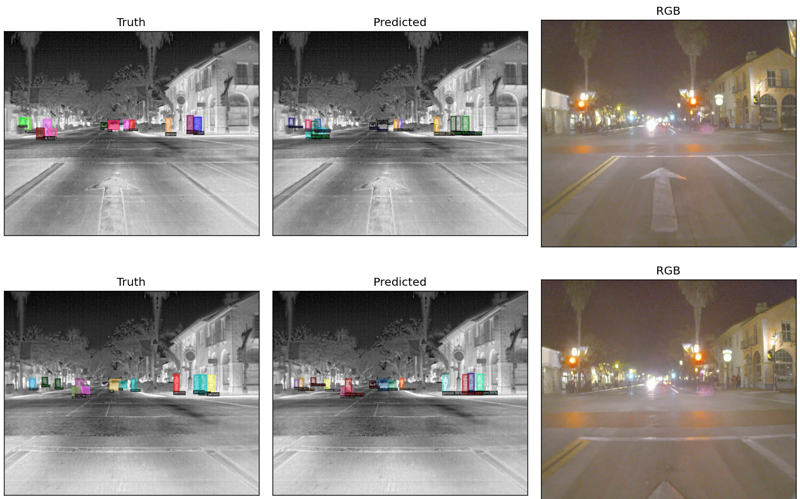

Object detection on FLIR dataset using MaskRCNN
In this post, we discuss some of the results we obtained when applying MaskRCNN on infra-red/thermal imagery. We choose to use the freely available FLIR dataset for this task. The FLIR dataset contains annotated contains images accquired using RGB and thermal cameras mounted infront of a vehicle. The images are frames extracted from video recordings. The recordings are from Santa Barbara area during the month of May. Four classes of objects are identified and annotated.
FLIR provides their benchmark bbox mAP scores obtained using RefineDetect512 detector. The table compares our detection bbox mAP scores obtained using MaskRCNN detector. We used the MaskRCNN implementation available in Detectron2 platform.
| Category | FLIR Benchmark | Pretrained on MS-COCO | Trained on FLIR |
|---|---|---|---|
| Person | 79.4 | 32.41 | 44.693 |
| Bicycle | 58.0 | 11.58 | 21.904 |
| Car | 85.6 | 34.10 | 54.557 |
Analyzing the mAP scores in the table above, we notice that the baseline MaskRCNN trained on MS-COCO only performs poorly compared to the benchmark. However upon training on the FLIR training-set, the mAP scores improve as expected.
The composite figure below compares the labeled truth (left column), detected objects (center column) and RGB view (right column) for two image frames.
